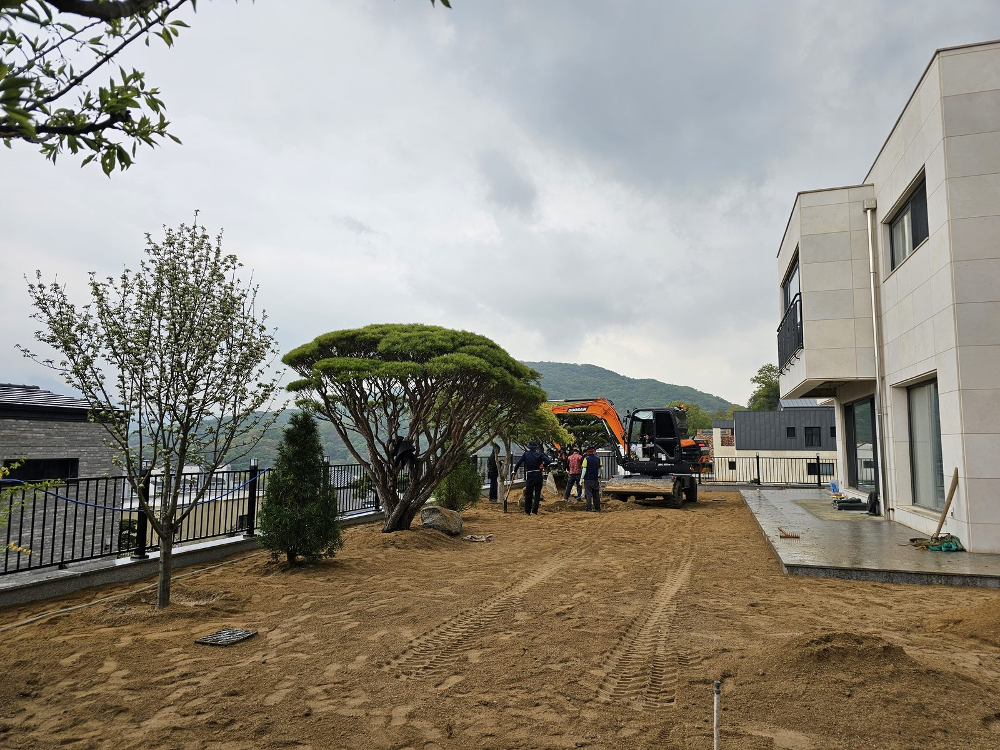
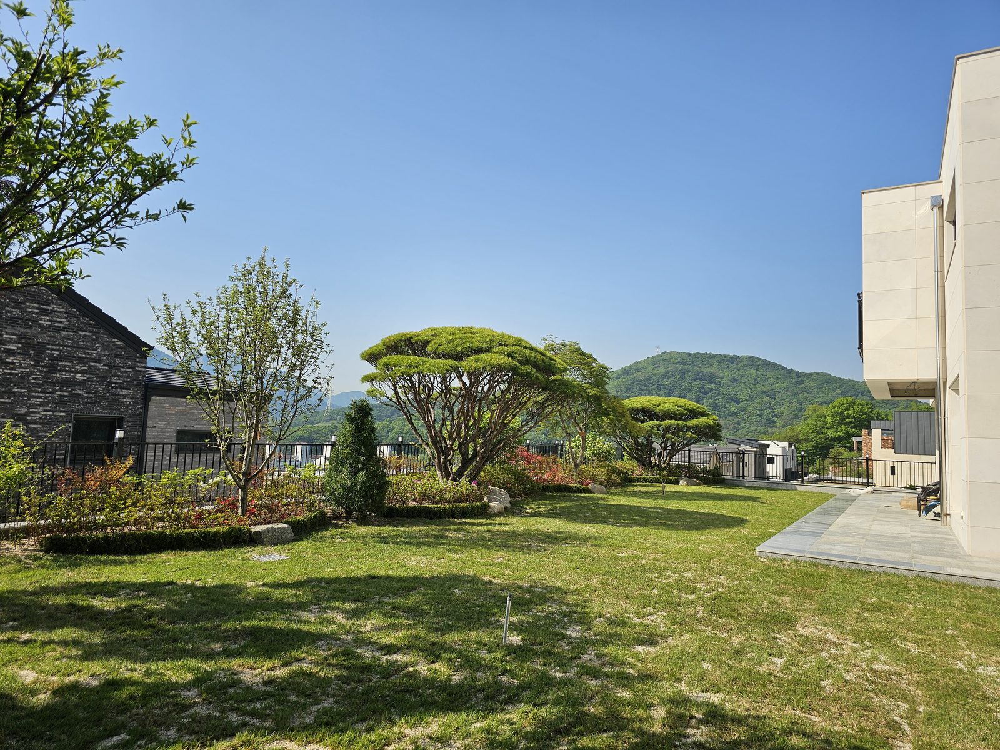
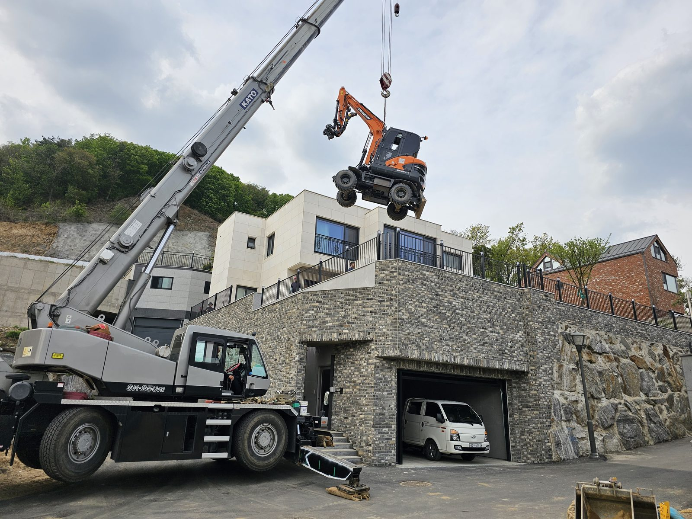

조경 안내
전원주택 마당 조경은 어떤 순서로 진행될까
한 줄 답
전원주택 마당 조경은 전화 상담, 현장 방문, 계획과 견적, 수목 선정, 시공, 사후 관리 순서로 진행됩니다. 정확한 견적은 장비 진입로, 배수, 흙 상태 같은 현장 조건을 직접 본 뒤에 나오며, 시공은 큰 나무를 먼저 앉히고 관목과 잔디를 마지막에 까는 순서로 합니다.


새로 지은 집의 마당은 대개 흙바닥에서 시작합니다. 부림조경이 시공한 양주 전원주택 현장을 예로 들어, 맨땅이 정원이 되기까지 어떤 순서로 일이 진행되는지 정리했습니다.
진행 순서
- 전화 상담원하시는 분위기, 대략적인 위치와 마당 규모를 알려주세요. 도면이나 사진이 있으면 함께 보내주셔도 됩니다.
- 현장 방문서울·경기 전 지역을 직접 찾아가 장비 진입로, 배수, 일조, 흙 상태, 주변 건물과의 거리를 확인합니다.
- 계획과 견적어디에 어떤 나무를 앉힐지, 잔디와 관목, 동선을 정하고 현장 조건을 반영한 견적을 드립니다.
- 수목 선정상징이 될 소나무는 양주 농원에서 직접 보고 고르실 수 있습니다.
- 시공땅 고르기와 배수 정리 → 큰 나무 식재 → 관목과 초화 → 잔디 순서로 진행합니다.
- 사후 관리물 주기와 전정, 시비 시기를 안내드리고, 필요하면 정기 관리를 맡습니다.
현장 방문에서 무엇을 보나요
조경 견적이 현장을 봐야 나오는 이유는 같은 마당이라도 작업 조건이 전혀 다르기 때문입니다.
- 장비 진입
- 큰 나무를 실은 차와 크레인이 마당 가까이 들어올 수 있는지가 공사 방법과 비용을 가장 크게 바꿉니다.
- 배수
- 물이 고이는 마당에서는 소나무가 잘 자라지 못합니다. 필요하면 배수부터 정리합니다.
- 일조와 바람
- 나무 자리를 정하는 기준입니다. 소나무는 볕이 잘 드는 자리를 좋아합니다.
- 흙 상태
- 건축 공사 뒤의 마당은 자갈과 폐자재가 섞여 있는 경우가 많아, 식재할 자리의 흙을 확인합니다.

양주 전원주택 현장에서는
이 현장은 마당이 옹벽 위에 있어 장비가 바로 들어갈 수 없었습니다. 크레인으로 굴착기를 마당 위로 들어 올려 땅을 고른 뒤, 수형 잡힌 조형 소나무를 앉히고 잔디를 깔았습니다. 좁은 진입 조건에서도 수목에 손상 없이 마무리했습니다. 이런 조건은 전화만으로는 알 수 없어서, 부림조경은 견적 전에 반드시 현장을 직접 봅니다.
자주 묻는 질문
집을 짓는 중인데 조경 상담은 언제 하는 게 좋나요?
건물 공사가 끝나기 전에 미리 상담하시는 것이 좋습니다. 큰 나무를 들일 장비 진입로, 배수, 마당 높이 같은 조건은 건축 마무리 단계에서 함께 정해야 나중에 추가 공사가 줄어듭니다.
도면이나 사진만으로 견적을 받을 수 있나요?
초기 상담은 전화, 도면, 사진으로도 가능합니다. 다만 정확한 견적은 장비 진입, 배수, 흙 상태 같은 현장 조건에 따라 달라지기 때문에 현장을 직접 본 뒤에 드립니다.
진입로가 좁아도 큰 소나무를 심을 수 있나요?
현장 조건에 따라 가능합니다. 양주 전원주택 현장에서는 크레인으로 굴착기를 옹벽 위 마당으로 들어 올려 작업했습니다. 현장을 보고 장비와 방법을 정합니다.